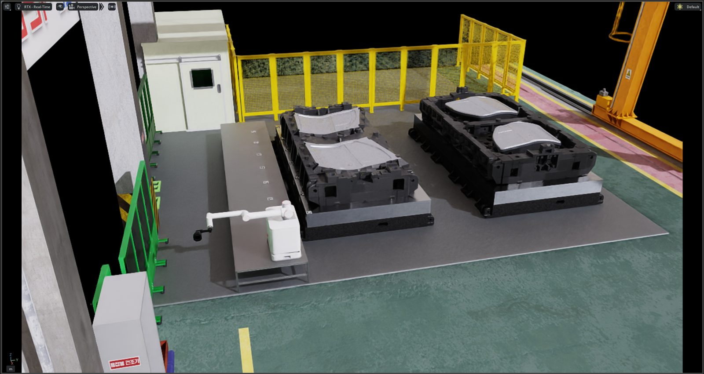
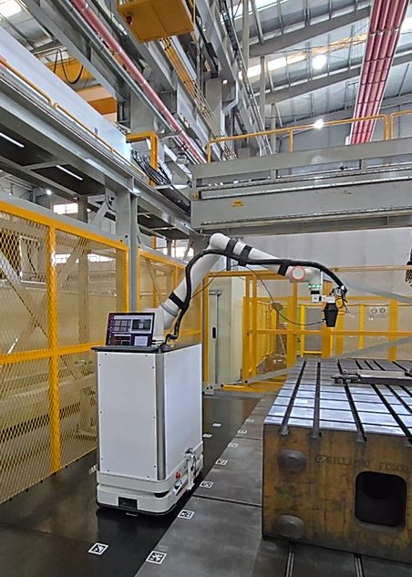
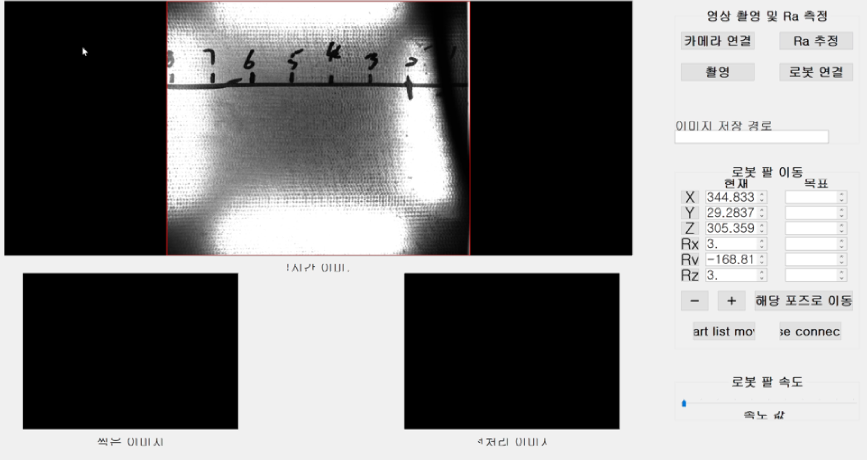

TL;DR
- 차체 프레스 금형 공장을 3D 스캔해 Isaac Sim 디지털 트윈으로 재현하고, 데모 핵심 알고리즘을 현장 투입 전에 시뮬레이션에서 검증했습니다.
- AprilTag 기반 모바일 플랫폼 위치 추정과 매니퓰레이터 제어를 개발해 반복 정밀도 평균 오차 1cm를 달성했습니다.
- PyQt GUI로 데이터 수집 속도를 약 50% 높이고, 골(valley)의 outlier를 제거한 새로운 표면 거칠기(Ra) 지표를 제안해 조도 추정 정확도를 약 10% 개선했습니다.
STEP 1디지털 트윈 환경 구축
실제 금형 공장을 3D 스캐너로 스캔해 Isaac Sim에 정밀한 디지털 트윈을 구축했습니다. 여러 기관이 협업하는 과제 특성상 현장 테스트 기회가 제한적이었기 때문에, 데모 시연에 필요한 핵심 알고리즘(주행 경로, 접근 자세, 검사 시퀀스)을 디지털 트윈에서 먼저 검증하고 현장에 나갔습니다.

STEP 2위치 추정·제어 알고리즘과 조도 추정 개선
- 위치 추정 — AprilTag 인식 기반 모바일 플랫폼 위치 추정 알고리즘 설계·구현
- 매니퓰레이터 제어 — Python SDK 기반 제어로 반복 정밀도 평균 오차 1cm, 최대 2cm 달성
- 데이터 수집 효율화 — 시편 촬영과 조도 측정을 통합한 PyQt GUI로 수집 속도 약 50% 향상
- 조도 추정 개선 — 골(valley)의 outlier를 제거한 새로운 표면 거칠기(Ra) 산출 방식을 제안, 조도 추정 정확도 약 10% 향상


ROLE2년차 프로젝트 리딩
2년차부터는 여러 기관과의 협업 창구를 맡아 현장 엔지니어와의 통합 테스트를 조율했습니다. 시뮬레이션 검증 → 테스트 베드 → 실제 현장의 3단계로 데모를 준비해, 제한된 현장 접근 시간 안에 통합 시연을 완수했습니다.
RESULT
- 매니퓰레이터 반복 정밀도 평균 오차 1cm (최대 2cm)
- 데이터 수집 속도 약 50% 향상 · 조도 추정 정확도 약 10% 개선
- 표면 조도 추정 관련 학회 논문 3편 발표 (대한기계학회 2024)
DEMO시연 영상
디지털 트윈 시뮬레이션
산업 현장 통합 시연
테스트 베드 검증